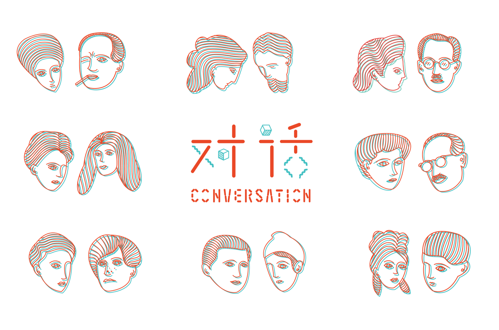
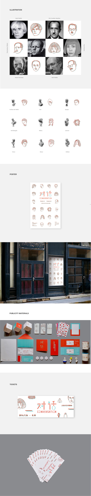
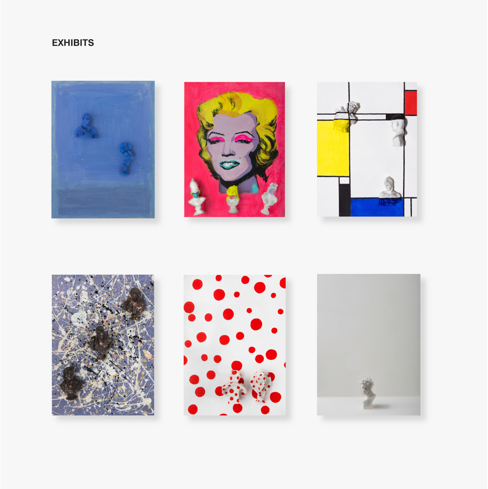
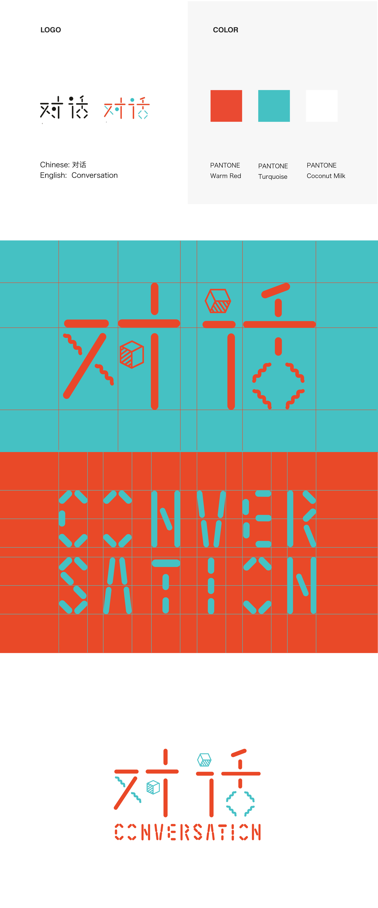
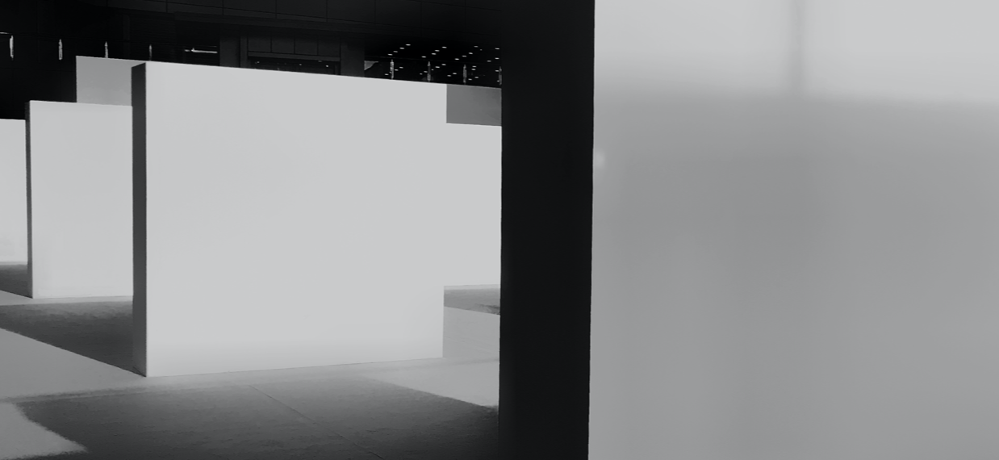

Conversation
A Display of Two Art Worlds
2019
ROLE
Nowadays, more and more "nonsense" creations becoming art. Do you have the experience of walking into
a museum, but can't enjoy or even understand the artworks in front of you? This situation makes me think
about the variation of art forms, how art transforms from classic to modern, to post-modern, are we lost in
the art world......
"Conversation" is the name of this exhibition, existing to illustrate a conversation between classic and modern arts through the display six handicrafts l created. Visitors could come and explore their own thoughts about the evolution of art. The visual identity system, publicity materials, souvenirs and packaging were a few pieces critical to the success of the project.
"Conversation" is the name of this exhibition, existing to illustrate a conversation between classic and modern arts through the display six handicrafts l created. Visitors could come and explore their own thoughts about the evolution of art. The visual identity system, publicity materials, souvenirs and packaging were a few pieces critical to the success of the project.

Design Direction
Painting
Exhibition Design
Visual Identity
Illustration




Behind the art
A palette with personality
l chose six most representative modern artists to be the reference of my creation. Mark Rothko, Andy Warhol,
Piet Mondrian, Jackson Pollock, Yayoi Kusama and Marcel Duchamp. Combining their most famous art pieces and
the historic gesso figures is my idea.
To provide a memorable, engaging experience and a strong brand presence, l curated a vibrant color palette to
pair with the main concept of this exhibition.





Thanks for scrolling
*
Exhibition Design
Say hi

👋